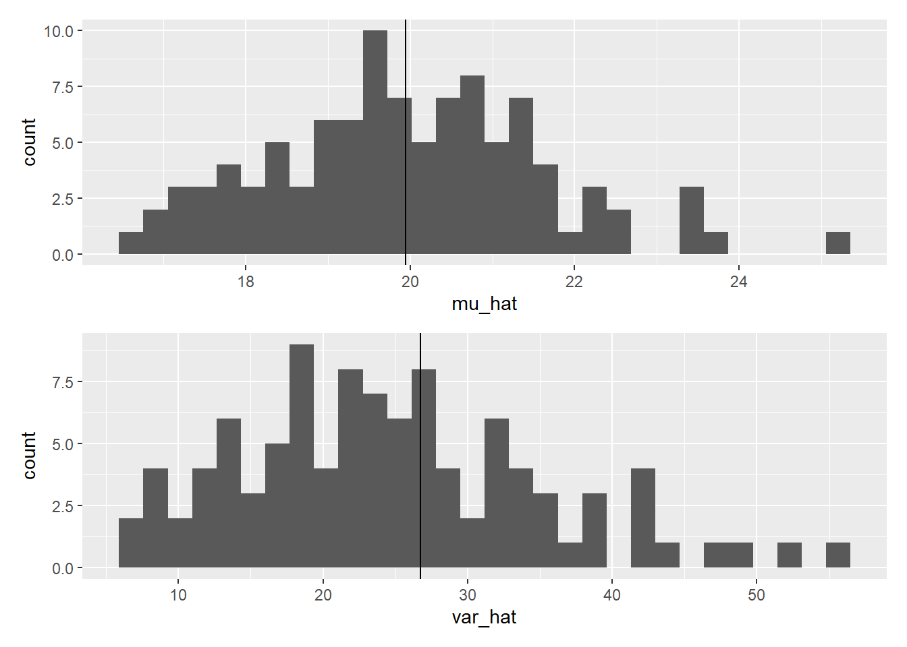
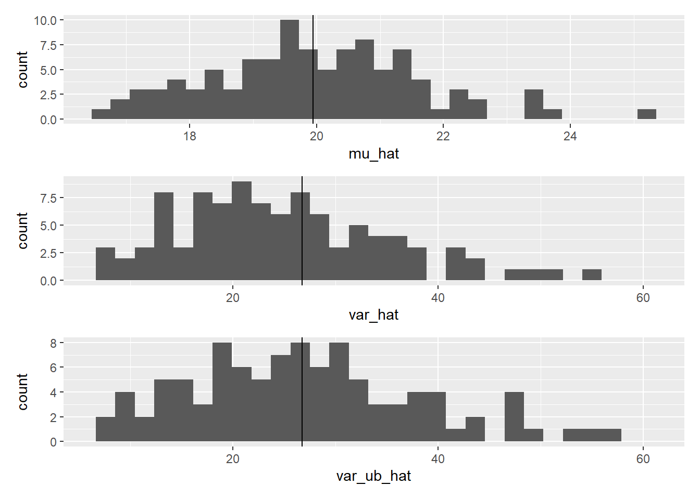

Chapter 2 Sampling
“Why do I need statistics in the first place?” This was the initial question that arose when I entered the field of ecology. Initially, I assumed it would be a straightforward query with an immediate response. However, I soon realized that it is a profound question with a complex answer. In short, “we need statistics because we often possess only partial information about what we seek to understand.” Now, let’s explore the more elaborate explanation below.
2.1 The Unknown: Garden Plant Example
Consider a scenario where we are conducting a study on plant height in a garden. In this garden, there exists a thousand of individual plants, making it impractical for a single researcher to measure all of them. Instead, due to resource limitations, a sample of \(10\) plants was selected to calculate the average height and the extent of variation among these plant individuals:
## # A tibble: 10 × 4
## ...1 plant_id height unit
## <dbl> <dbl> <dbl> <chr>
## 1 1 1 16.9 cm
## 2 2 2 20.9 cm
## 3 3 3 15.8 cm
## 4 4 4 28 cm
## 5 5 5 21.6 cm
## 6 6 6 15.9 cm
## 7 7 7 22.4 cm
## 8 8 8 23.7 cm
## 9 9 9 22.9 cm
## 10 10 10 18.5 cmCool. Let’s use this data set to learn about the pitfall behind this. Create a vector of plant height h and put it in a tibble() to analyze it:
h <- c(16.9, 20.9, 15.8, 28, 21.6, 15.9, 22.4, 23.7, 22.9, 18.5)
df_h1 <- tibble(plant_id = 1:10, # a vector from 1 to 10 by 1
height = h, # height
unit = "cm") # unitThis format (tibble()) is better than a raw vector of height because it allows more flexible analysis. Let’s add columns of mu_height and var_height using mutate(), a function that adds new column(s) to an existing tibble() (or data.frame()):
# nrow() returns the number of rows
# while piping, "." refers to the dataframe inherited
# i.e., nrow(.) counts the number of rows in df_h1
df_h1 <- df_h1 %>%
mutate(mu_height = mean(height),
var_height = sum((height - mu_height)^2) / nrow(.))Awesome, we were able to get the average height and the variance! – however, how confident are you? We obtained plant height only from 10…out of 1000. Are they different if we measure another set of 10 plant individuals? Let’s see:
## # A tibble: 10 × 4
## ...1 plant_id height unit
## <dbl> <dbl> <dbl> <chr>
## 1 11 11 27.6 cm
## 2 12 12 21.9 cm
## 3 13 13 16.9 cm
## 4 14 14 8.9 cm
## 5 15 15 25.6 cm
## 6 16 16 19.8 cm
## 7 17 17 19.9 cm
## 8 18 18 24.7 cm
## 9 19 19 24.1 cm
## 10 20 20 23 cmCreate another tibble() :
h <- c(27.6, 21.9, 16.9, 8.9, 25.6, 19.8, 19.9, 24.7, 24.1, 23)
df_h2 <- tibble(plant_id = 11:20, # a vector from 11 to 20 by 1
height = h,
unit = "cm") %>%
mutate(mu_height = mean(height),
var_height = sum((height - mu_height)^2) / nrow(.))
print(df_h2)## # A tibble: 10 × 5
## plant_id height unit mu_height var_height
## <int> <dbl> <chr> <dbl> <dbl>
## 1 11 27.6 cm 21.2 25.8
## 2 12 21.9 cm 21.2 25.8
## 3 13 16.9 cm 21.2 25.8
## 4 14 8.9 cm 21.2 25.8
## 5 15 25.6 cm 21.2 25.8
## 6 16 19.8 cm 21.2 25.8
## 7 17 19.9 cm 21.2 25.8
## 8 18 24.7 cm 21.2 25.8
## 9 19 24.1 cm 21.2 25.8
## 10 20 23 cm 21.2 25.8Wow, that’s totally different.
2.2 Linking Part to the Whole
The exercise highlights an important takeaway: what we can determine from the above data is the average and variance of the sample, which may not perfectly represent the characteristics of the entire garden.
In the field of biological research, it is often impractical or impossible to sample the entire population, so we must rely on estimating the unknowns (in this case, the mean and variance) from the available samples. This is where statistics comes into play, offering a tool to infer information about the entire population based on partial information obtained from the samples.
The unknowns we are interested in, which the population mean and variance in this example, are referred to as “parameters.” These parameters cannot be directly measured but can be estimated from samples through statistical inference.
Provided that certain assumptions are met, the sample mean is the unbiased point estimate of the population mean. The “unbiased” means that the sample means – if we repeat the sampling process – are centered around the population mean. In the meantime, the sample variance – if we use the formula in Chapter 1 – is “biased.” It tends to be smaller than the population variance.
Let’s explore this concept further through simple simulations. Suppose we have data on a thousand plant individuals, although this scenario may be unrealistic in practice. However, by conducting these simulations, we can examine how different sample means and variances can deviate from the true values.
Download the data here containing height measurements of thousand individuals, and place this file under data_raw/ in your project directory. You can load this csv file in R as follows:
# load csv data on R
df_h0 <- read_csv("data_raw/data_plant_height.csv")
# show the first 10 rows
print(df_h0)## # A tibble: 1,000 × 4
## ...1 plant_id height unit
## <dbl> <dbl> <dbl> <chr>
## 1 1 1 16.9 cm
## 2 2 2 20.9 cm
## 3 3 3 15.8 cm
## 4 4 4 28 cm
## 5 5 5 21.6 cm
## 6 6 6 15.9 cm
## 7 7 7 22.4 cm
## 8 8 8 23.7 cm
## 9 9 9 22.9 cm
## 10 10 10 18.5 cm
## # ℹ 990 more rowsUsing this synthetic dataset (I generated through a random value generator), we can calculate the true mean and variance (reference values). It is important to note that in this case, we use the term “calculate” for the mean and variance because they represent the parameters of the entire population, which are known to us in this scenario.
mu <- mean(df_h0$height)
sigma2 <- sum((df_h0$height - mu)^2) / nrow(df_h0)
print(mu)## [1] 19.9426print(sigma2)## [1] 26.74083We can simulate the sampling of 10 plant individuals by randomly selecting 10 rows from df_h0:
df_i <- df_h0 %>%
sample_n(size = 10) # size specifies the number of rows to be selected randomly
print(df_i)## # A tibble: 10 × 4
## ...1 plant_id height unit
## <dbl> <dbl> <dbl> <chr>
## 1 308 308 22.8 cm
## 2 461 461 17.7 cm
## 3 602 602 27.5 cm
## 4 181 181 13.8 cm
## 5 488 488 14.8 cm
## 6 565 565 17 cm
## 7 302 302 14.8 cm
## 8 96 96 22.8 cm
## 9 853 853 14.8 cm
## 10 987 987 15.9 cmSince sample_n() selects rows randomly, you will (very likely) get different set of 10 individuals/rows every single time. Below is another set of 10 rows (notice that df_i is overwritten with the new data set):
df_i <- df_h0 %>%
sample_n(size = 10)
print(df_i)## # A tibble: 10 × 4
## ...1 plant_id height unit
## <dbl> <dbl> <dbl> <chr>
## 1 962 962 19.9 cm
## 2 618 618 11 cm
## 3 614 614 13 cm
## 4 735 735 22.1 cm
## 5 215 215 24.9 cm
## 6 32 32 19.5 cm
## 7 230 230 21.3 cm
## 8 367 367 23.4 cm
## 9 270 270 15.3 cm
## 10 524 524 21 cmLet’s obtain 100 sets of 10 plant individuals (randomly selected) and estimate the mean and variance in each. While we can perform random sampling one by one, this is cumbersome – at least, I do not want to do it. Instead, we can leverage a technique of for loop:
# for reproducibility
set.seed(3)
mu_i <- var_i <- NULL # create empty objects
# repeat the work in {} from i = 1 to i = 100
for (i in 1:100) {
df_i <- df_h0 %>%
sample_n(size = 10) # random samples of 10 individuals
# save mean for sample set i
mu_i[i] <- mean(df_i$height)
# save variance for sample set i
var_i[i] <- sum((df_i$height - mean(df_i$height))^2) / nrow(df_i)
}Take a look at mu_i and var_i :
print(mu_i)## [1] 19.97 17.86 22.55 22.03 17.00 23.28 21.33 21.23 18.55 19.29 22.14 19.84
## [13] 22.43 22.13 21.13 19.40 19.39 20.43 19.12 20.66 21.01 19.48 21.73 19.63
## [25] 21.03 20.60 21.11 20.42 18.76 23.70 20.31 22.22 21.34 20.70 20.96 20.03
## [37] 21.77 19.19 19.87 21.38 19.64 23.31 19.89 19.21 19.68 19.54 17.54 19.05
## [49] 18.91 20.57 18.33 18.07 19.48 17.70 20.24 17.74 20.45 16.48 18.93 17.60
## [61] 17.23 20.75 18.06 20.06 20.80 21.72 19.02 25.08 18.90 20.69 23.28 20.87
## [73] 18.65 19.74 21.47 17.95 16.98 18.30 19.77 17.25 19.60 21.27 19.28 20.42
## [85] 19.60 18.41 20.15 21.24 19.70 21.56 20.75 19.54 17.54 18.52 19.85 18.40
## [97] 20.39 17.07 17.84 20.66print(var_i)## [1] 14.1961 21.6884 28.2685 21.6341 6.5700 24.5996 23.6941 24.8681 21.6485
## [10] 36.3689 17.8844 31.5784 21.0521 34.2341 20.6281 10.4420 20.0469 31.2781
## [19] 32.0316 23.0964 9.8789 31.8916 28.3061 19.6861 8.2641 23.3640 26.8769
## [28] 48.9416 27.7644 42.4220 38.4989 12.7076 15.9004 8.6740 11.7284 26.2061
## [37] 21.7461 25.9269 28.0421 6.2616 16.5584 27.7489 17.3609 23.1349 38.6936
## [46] 25.0984 13.5864 25.2625 7.7149 17.5341 11.4681 38.1561 12.6376 42.5480
## [55] 31.9224 13.9824 14.9725 25.8296 33.6781 8.2440 31.4741 29.7805 26.7324
## [64] 47.3704 26.8660 24.0536 29.5076 23.7376 14.8000 51.8449 13.3536 18.5581
## [73] 18.9185 12.4544 36.2201 16.3225 17.9236 42.8760 18.5421 22.0205 34.1680
## [82] 28.8841 26.6976 22.7356 35.2900 19.2229 34.3905 17.3784 23.1880 42.4264
## [91] 18.5365 18.5424 21.5204 13.1276 17.7185 21.2940 27.1649 35.3141 43.5624
## [100] 55.1484In each element of mu_i and var_i, we have saved estimated mean (\(\hat{\mu}\); reads mu hat) and variance (\(\hat{\sigma^2}\)) of 10 plant height measures for dataset i. By drawing a histogram of these values, we can examine the distributions of mean and variance estimates. I use R package patchwork to make a better figure:
#install.packages("patchwork") # install only once
library(patchwork)
df_sample <- tibble(mu_hat = mu_i, var_hat = var_i)
# histogram for mean
g_mu <- df_sample %>%
ggplot(aes(x = mu_hat)) +
geom_histogram() +
geom_vline(xintercept = mu)
# histogram for variance
g_var <- df_sample %>%
ggplot(aes(x = var_hat)) +
geom_histogram() +
geom_vline(xintercept = sigma2)
# layout vertically
# possible only if "patchwork" is loaded
g_mu / g_var
While sample means are indeed symmetrically distributed around the true mean, sample variances tend to be biased and skewed to the right, often underestimating the true variance.
The bias in estimating the variance arises due to inferring the parameter from a small number of samples. However, there is good news: an unbiased estimator of variance exists. The formula for the unbiased estimator of variance is as follows:
\[ \frac{\sum_i^N (x_i - \mu)^2}{N-1} \]
The correction in the denominator (\(N\) replaced with \(N-1\)) compensates for the bias, providing an estimate of the true variance without systematic underestimation (although this seems a simple correction, a deep math underlies the derivation of \(N-1\)). This is the default formula in var() in R, a function used to estimate unbiased variance (and unbiased SD sd()). Comparison reveals how this works:
# for reproducibility
set.seed(3)
# redo simulations ----
mu_i <- var_i <- var_ub_i <- NULL # create empty objects
# repeat the work in {} from i = 1 to i = 100
for (i in 1:100) {
df_i <- df_h0 %>%
sample_n(size = 10) # random samples of 10 individuals
# save mean for sample set i
mu_i[i] <- mean(df_i$height)
# save variance for sample set i
var_i[i] <- sum((df_i$height - mean(df_i$height))^2) / nrow(df_i)
var_ub_i[i] <- var(df_i$height)
}
# draw histograms ----
df_sample <- tibble(mu_hat = mu_i,
var_hat = var_i,
var_ub_hat = var_ub_i)
# histogram for mu
g_mu <- df_sample %>%
ggplot(aes(x = mu_hat)) +
geom_histogram() +
geom_vline(xintercept = mu)
# histogram for variance
# scale_x_continuous() adjusts scale in x-axis
g_var <- df_sample %>%
ggplot(aes(x = var_hat)) +
geom_histogram() +
geom_vline(xintercept = sigma2) +
scale_x_continuous(limits= c(min(var_i, var_ub_i),
max(var_i, var_ub_i)))
# histogram for unbiased variance
g_var_ub <- df_sample %>%
ggplot(aes(x = var_ub_hat)) +
geom_histogram() +
geom_vline(xintercept = sigma2) +
scale_x_continuous(limits= c(min(var_i, var_ub_i),
max(var_i, var_ub_i)))
g_mu / g_var / g_var_ub
In summary, samples can only provide information about a part of the whole population. The complete picture of the entire population is often unknown, and we rely on estimating key parameters from the available samples. This concept applies to a wide range of parametric analyses in statistics, where we use sample data to make inferences about the population parameters.
Recognizing the limitations and uncertainties associated with working with samples is essential for proper statistical analysis and interpretation of results in various fields of study.
2.3 Laboratory
We used 10 plants to estimate sample means and variances. Obtain 100 sub-datasets with 50 and 100 measures each, and draw histograms of sample means and unbiased variances (use
var()).Sample means and unbiased variances are unbiased if samples are randomly selected. What happens if samples are non-random? Suppose the investigator was unable to find plants less than 10 cm in height – the following code excludes those less than 10 cm in height:
df_h10 <- df_h0 %>% filter(height >= 10)Repeat step 1 with
df_h10instead ofdf_h0and compare the results.